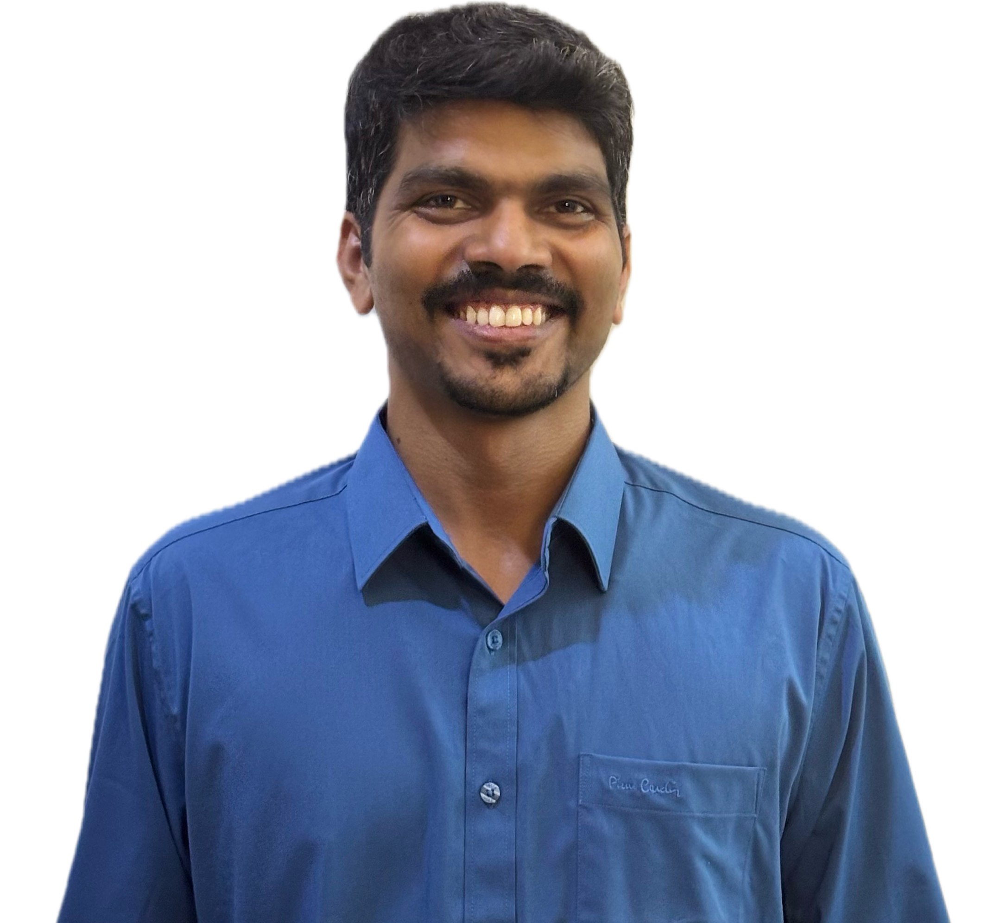

Water & Materials Specialist
Dr. Antony Dasint Lopis
Research Scientist | Materials Characterization Consultant | Water & Wastewater Specialist
I provide expert interpretation of materials characterization data, scientific consulting, and technical support for researchers, universities, R&D laboratories, and industries.
With extensive experience in nanomaterials, photocatalysis, membrane technology, and environmental engineering, I help researchers convert complex analytical data into meaningful scientific conclusions suitable for journal publications, theses, patents, and industrial reports.

What I Offer
Focused consulting across characterization interpretation, scientific writing, and water treatment research support.
Scientific depth for academic and industrial work
Why work with me?
Reliable support for researchers and organizations preparing manuscripts, theses, proposals, patents, and industrial reports.
- Ph.D. in Nanoscience
- Research Scientist with Industrial R&D Experience
- Published in High-Impact International Journals
- Inventor & Patent Holder
- Experience with Industrial Water Treatment Technologies
- Strong Academic and Industrial Collaboration Experience
Consulting for data-driven research decisions
Get support translating characterization results into defensible discussion, conclusions, and technical documentation for research and industry-facing work.